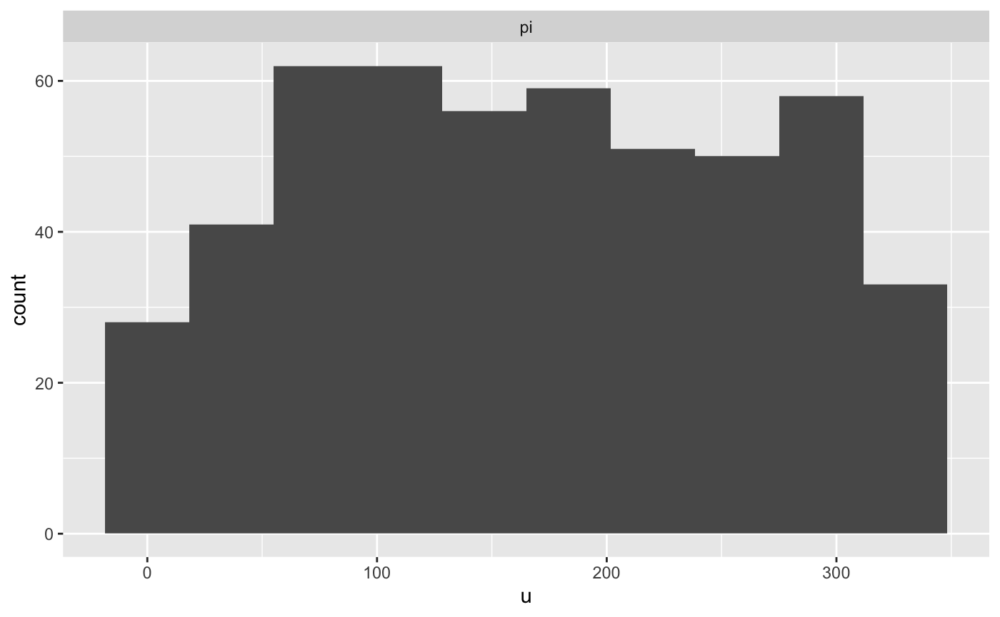

Here is a Stan program for a beta-binomial model
data {
int<lower = 1> N;
real<lower = 0> a;
real<lower = 0> b;
}
transformed data { // these adhere to the conventions above
real pi_ = beta_rng(a, b);
int y = binomial_rng(N, pi_);
}
parameters {
real<lower = 0, upper = 1> pi;
}
model {
target += beta_lpdf(pi | a, b);
target += binomial_lpmf(y | N, pi);
}
generated quantities { // these adhere to the conventions above
int y_ = y;
vector[1] pars_;
int ranks_[1] = {pi > pi_};
vector[N] log_lik;
pars_[1] = pi_;
for (n in 1:y) log_lik[n] = bernoulli_lpmf(1 | pi);
for (n in (y + 1):N) log_lik[n] = bernoulli_lpmf(0 | pi);
}Notice that it adheres to the following conventions:
transformed data block are postfixed with an underscore,
such as pi_. These are considered the “true” parameters
being estimated by the corresponding symbol declared in the
parameters block, which have the same names except for the
trailing underscore, such as pi.transformed data block, which in this case is
int y = binomial_rng(N, pi_);. To avoid confusion,
y does not have a training underscore.vector in the generated quantities block named
pars_
generated quantities block named `y_. This is
optional.generated quantities block contains an integer
array named ranks_ whose only values are zero or one,
depending on whether the realization of a parameter from the posterior
distribution exceeds the corresponding “true” realization, which in this
case is ranks_[1] = {pi > pi_};. These are not actually
“ranks” but can be used afterwards to reconstruct (thinned) ranks.generated quantities block contains a vector named
log_lik whose values are the contribution to the
log-likelihood by each observation. In this case, the “observations” are
the implicit successes and failures that are aggregated into a binomial
likelihood. This is optional but facilitates calculating the Pareto k
shape parameter estimates that indicate whether the posterior
distribution is sensitive to particular observations.Assuming the above is compile to a code stanmodel named
beta_binomial, we can then call the sbc
function
At which point, we can then call
print(output)## 0 chains had divergent transitions after warmup
plot(output, bins = 10) # it is best to specify the bins argument yourself
Talts, S., Betancourt, M., Simpson, D., Vehtari, A., and Gelman, A. (2018). Validating Bayesian Inference Algorithms with Simulation-Based Calibration. arXiv preprint arXiv:1804.06788